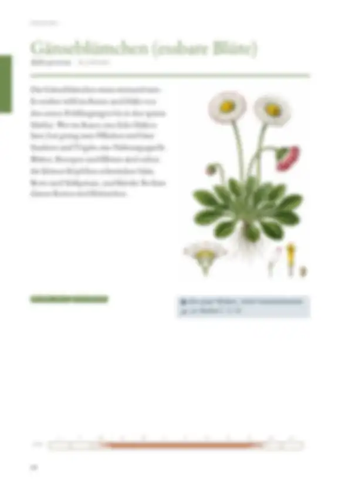
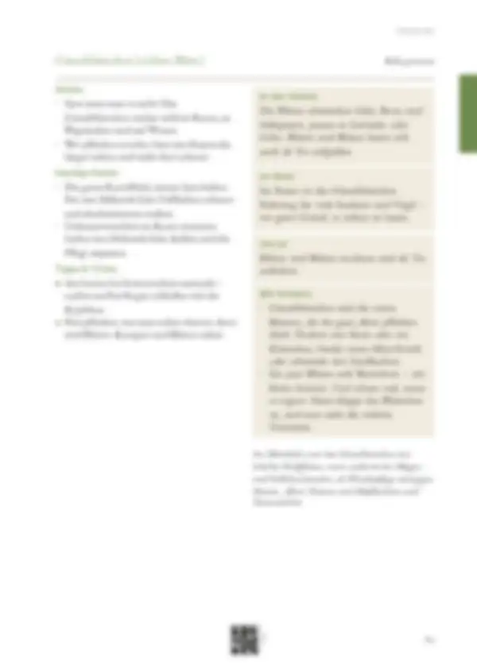

Tippe eine Quelle an, um zu sehen, wo sie verwendet wird – oder tippe auf einen Bereich der Seite.
5 Quellen dieser Doppelseite
Original · abgerufen am 26.10.2026 · ● belegtVerwendet in: Zusammenfassung (Seite allgemein), Sicherheitshinweis „In Maßen“, Anbau, Anbau, Punkt 1
Original · abgerufen am 28.10.2026 · ◐ ErfahrungVerwendet in: Zusammenfassung (Seite allgemein), Anbau, Anbau, Punkt 2, Im Beet, Häufige Fehler, Häufige Fehler, Punkt 1, Häufige Fehler, Punkt 2
Original · abgerufen am 26.10.2026 · ◐ ErfahrungVerwendet in: Zusammenfassung (Seite allgemein), Monatsleiste, Anbau, In der Küche, Anbau, Punkt 1, Im Beet, Vorrat, Tipps & Tricks, Mit Kindern, Tipps & Tricks, Punkt 1, Tipps & Tricks, Punkt 2
Original · abgerufen am 26.10.2026 · ● belegtVerwendet in: Zusammenfassung (Seite allgemein), Sicherheitshinweis „In Maßen“, Geschichte, Seite allgemein
Original · abgerufen am 26.10.2026Verwendet in: Sicherheitshinweis „In Maßen“
● belegt (Versuch, Fachinstitut) · ◐ Erfahrung (Beratung, Praxis) · ○ Überlieferung. Abschnitte ohne eigene Quellenangabe in den Daten zeigen die Quellen der ganzen Seite („Seite allgemein“).